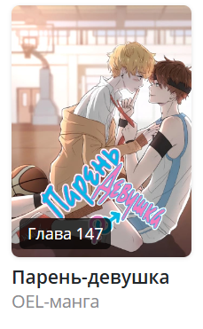
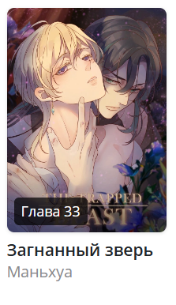
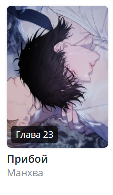

YaoiLib
поиск
home
contact us
подвал(но без детей)
Рекомендация о лучших манхвах!
Здесь изображены лучшие манхвы, с небольшим описанием под ними.
Официальная серверная игра — это реальный мир!
Elix — игра об основании и развитии империи,
в которой многое покрыто завесой тайны.
Кин убеждает своего друга детства
одеться в женскую одежду и притвориться его девушкой,
чтобы выглядеть крутым перед Хэйли,
девушкой, которая ему действительно нравится.

— Сонбэ, что вы делаете?
— У меня уже стоит♡ Давай переспим.

Когда-то Синму был членом королевской семьи,
но из-за поражения в войне стал пленником страны-победительницы
и теперь вынужден терпеть унижения и притворяться омегой
Красивое лицо, крепкое тело и богатство.
Пэк Ыйгон - парень, у которого есть всё, кроме… совести!

— Сонбэ, что вы делаете?
— У меня уже стоит♡ Давай переспим.
YaoiLib
обратная связь
contacts
подвал(но с детьми)